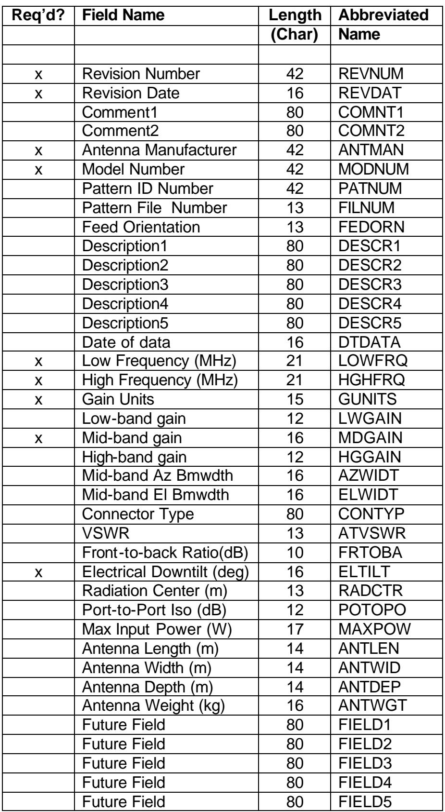
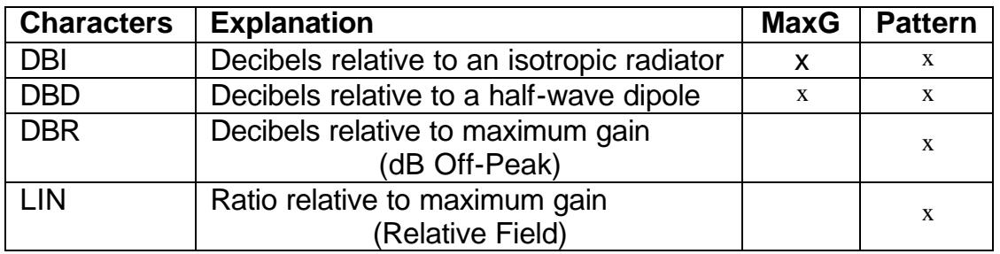
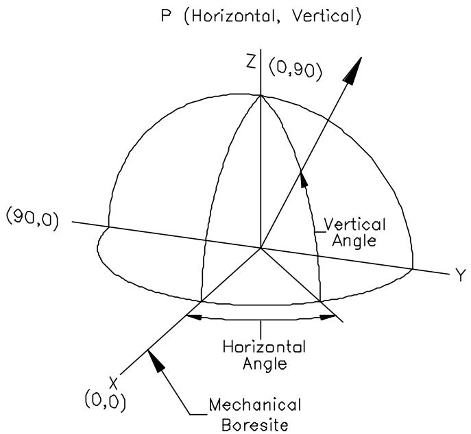
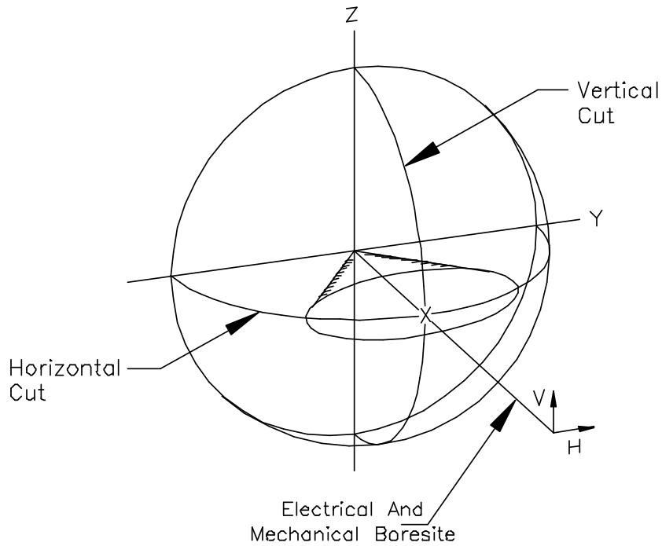
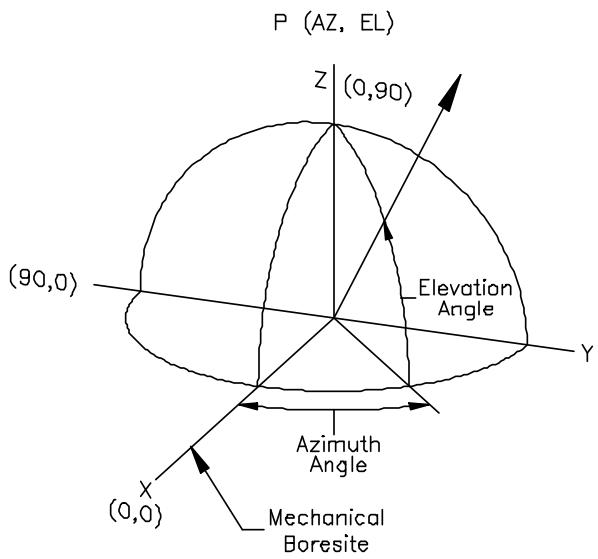
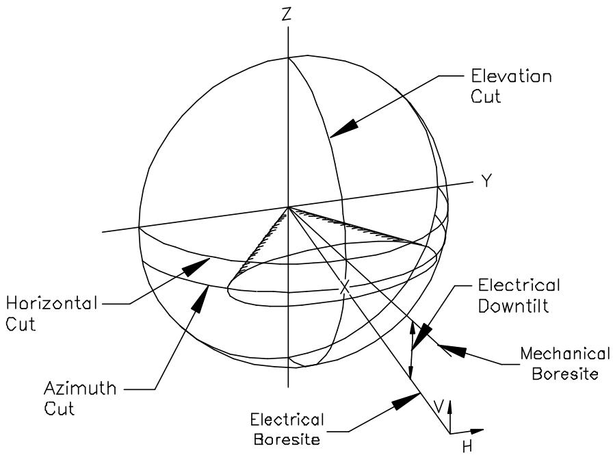
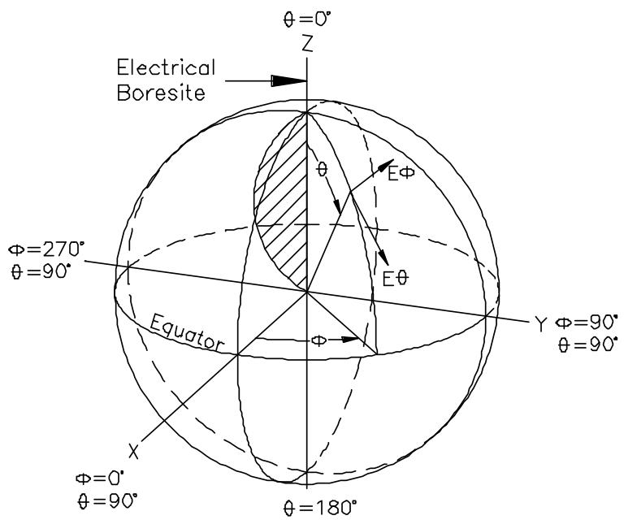

#1 titleNSMA --- Hệ thống Anten --- Định dạng Chuẩn cho Các Mẫu Anten Số hóa
#2 textKHUYẾN NGHỊ WG16.99.050 20/5/99
#3 titleMục lục
#4 titleLỜI NÓI ĐẦU..
#5 titleGIỚI THIỆU.. iii
#6 list
1.0 Phạm vi ....
2.0 Tài liệu tham khảo ....
3.0 Yêu cầu......
#7 list
3.1 Định dạng Tổng thể .
3.2 Các trường....
#8 list
3.2.1 Đặc điểm Trường .
3.2.2 Các tham số trường được mô tả.. .3
#9 text4.0 Thư mục .......... .. 14
#10 titlePhụ lục A (Quy chuẩn)..... ... 15
#11 list
A.1 Định nghĩa và Thực hành Chung . .. 15
A.2 Hình học Mẫu Ngang/Dọc.. ..16
A.3 Hình học Mẫu Phương vị/Góc nâng ... .. 17
A.4 Hình học Mẫu Hình cầu....... .. 18
A.5 Ký hiệu Đường cắt Mẫu (XXX).. .. 18
#12 titlePhụ lục B (Quy chuẩn)......... ... 19
#13 titlePhụ lục C (Tham khảo) .......... ..20
#14 titleLỜI NÓI ĐẦU
#15 text(Lời nói đầu này không phải là một phần của Khuyến nghị này)
#16 textKhuyến nghị này được chuẩn bị bởi Nhóm Công tác 16 (Hệ thống Anten) của NSMA. Các thành viên của Nhóm Công tác TG-8.11.3 của TIA đã đóng góp vào việc chuẩn bị tài liệu này. Nhiều yêu cầu trong tài liệu này tương thích với các yêu cầu của Định dạng Dữ liệu Chuẩn Mẫu Anten TIA do Tiểu ban TR 8.11 của TIA tạo ra. Tuy nhiên, cần thận trọng vì có thể có sự khác biệt giữa hai tài liệu.
#17 textLưu ý: Định dạng này tương thích với Y2K.
#18 textPhụ lục A và B là quy chuẩn. Phụ lục C chỉ dành cho thông tin.
#19 titleGIỚI THIỆU
#20 textMục đích của Khuyến nghị này là cung cấp một định dạng dữ liệu mẫu NSMA mở rộng để các nhà sản xuất anten thương mại tuân thủ. Nó được thúc đẩy bởi nhận xét của các nhà cung cấp phần mềm dự đoán truyền sóng (tức là người dùng các mẫu như vậy) rằng mọi nhà sản xuất anten trạm gốc đều có định dạng độc quyền riêng và một định dạng chuẩn hóa duy nhất sẽ giúp việc phát triển phần mềm đơn giản hơn, đảm bảo sử dụng nhất quán dữ liệu mẫu anten và tạo điều kiện cho độ chính xác dữ liệu thông qua một định dạng dữ liệu chung, mạnh mẽ.
#21 textMục đích của Định dạng Chuẩn NSMA mới này cho Các Mẫu Anten Số hóa là:
#22 list
1. Nhất quán với định dạng NSMA hiện tại nhưng đủ linh hoạt để có thể áp dụng cho nhiều loại anten thương mại, bao gồm L I il
anten vi ba mặt đất, anten trạm gốc và anten trạm mặt đất .
2. Có phạm vi rộng để có thể xử lý nhiều dạng hình học cắt mẫu và các trường hợp phân cực.
3. Có định dạng dữ liệu mẫu cơ bản nhất quán với các định dạng và quy ước mẫu của trường kiểm tra anten.
4. Kết hợp các trường mô tả cùng với dữ liệu mẫu anten chứa thông tin và thông số kỹ thuật liên quan đến thiết kế hệ thống và phối hợp.
5. Bao gồm tất cả dữ liệu cần thiết cho các định dạng tệp phần mềm dự đoán truyền sóng hiện có.
6. Có thể được tải vào một chương trình bảng tính đơn giản.
#23 titleNSMA--- Hệ thống Anten --- Định dạng Chuẩn cho Các Mẫu Anten Số hóa
#24 title1.0 Phạm vi
#25 textTài liệu này nhằm mục đích tiêu chuẩn hóa việc trình bày các mẫu anten số hóa cho các hệ thống anten thương mại.
#26 title2.0 Tài liệu tham khảo
#27 textCác tài liệu sau đây cần được tham khảo khi áp dụng Tiêu chuẩn này:
#28 list
[1] ANSI/IEEE Std 149, Quy trình Kiểm tra Tiêu chuẩn IEEE cho Anten
[2] EIA/TIA-329-B, Tiêu chuẩn Tối thiểu cho Anten Truyền thông, Phần 1: Anten Trạm gốc
#29 title3.0 Yêu cầu
#30 title3.1 Định dạng Tổng thể
#31 textMỗi tệp bao gồm dữ liệu cho một anten ở một hoặc nhiều tần số. Mỗi tần số bao gồm một hoặc nhiều đường cắt mẫu. Mỗi đường cắt mẫu bao gồm một số điểm dữ liệu. Chỉ những trường được đánh dấu bằng chữ “x” mới được yêu cầu tuân thủ tiêu chuẩn này; tuy nhiên, các nhà sản xuất được khuyến khích mạnh mẽ bao gồm tất cả các trường trong tệp dữ liệu của họ. Dữ liệu phải được nhập vào tệp theo thứ tự được đưa ra trong tiêu chuẩn này. Tuy nhiên, không cần thiết phải bao gồm “các trường trống” chỉ bao gồm tên trường.
#32 title3.2 Các trường
#33 title3.2.1 Đặc điểm Trường
#34 textCác trường được sử dụng trong các mẫu anten số hóa được định nghĩa trong Bảng 1. Chúng được mô tả chi tiết trong tiểu mục 3.2.2.
#35 textCác nhận xét trên mỗi dòng có thể được thêm vào bất kỳ bản ghi nào. Trong bất kỳ bản ghi nào, tất cả dữ liệu sau ký tự “!” sẽ bị bỏ qua.
#36 table

#38 title3.2.2 Các tham số trường được mô tả
#39 textSau đây là các giải thích chi tiết về từng dòng dữ liệu. Lượng dữ liệu được chỉ định bao gồm tất cả các ký tự ngoại trừ CRLF.
#40 title3.2.2.1 Số Phiên bản
#41 textĐây là phiên bản của tiêu chuẩn này mà mẫu tuân theo. Nó phải bao gồm số tiêu chuẩn đầy đủ. ví dụ: “NSMA WG16.99.050”.
#63 textĐây là số model đầy đủ như được sử dụng khi dữ liệu được lấy. Các bổ sung cho số model như dấu gạch ngang hoặc ngoại lệ phải được bao gồm.
#64 title3.2.2.7 Số Tệp Mẫu
#65 text(13 dữ liệu)
#66 textFILNUM:,XX/XXCRLF
#67 textĐối với trường hợp có nhiều hơn một tệp được liên kết với một số model anten cụ thể, trường này sẽ chứa số tệp cụ thể và tổng số tệp được liên kết với số model đó. Một ví dụ về trường hợp như vậy là anten băng tần kép có hai tệp mẫu được liên kết với nó. Trong trường hợp đó, trường cho tệp đầu tiên sẽ là “01/02” và tệp thứ hai là “02/02”.
#71 textĐây là số ID mẫu do nhà sản xuất chỉ định có thể được gán tùy chọn cho dữ liệu mẫu. Đối với vi ba mặt đất, đây là số ID NSMA.
#72 title3.2.2.9 Hướng Feed
#73 text(13 dữ liệu)
#74 textFEDORN:,XXXXXCRLF
#75 textĐối với anten vi ba mặt đất, đây là hướng của móc feed khi nhìn từ phía sau anten theo hướng của trục chuẩn cơ học. Các hướng tiêu chuẩn là “phải” và “trái”.
#96 textĐiều này được sử dụng để mô tả anten và các đặc tính của nó.
#97 title3.2.2.15 Ngày dữ liệu
#98 text(16 dữ liệu)
#99 textDTDATA:,YYYYMMDDCRLF
#100 textĐây là ngày dữ liệu mẫu được lấy.
#101 title3.2.2.16 Tần số thấp
#102 text(21 dữ liệu)
#103 textLOWFRQ:,999999.999999CRLF
#104 textĐiều này nhằm xác định tần số thấp hơn của băng thông hoạt động của anten. Tần số tính bằng Megahertz. Nếu anten có thể hoạt động ở hai dải tần số riêng biệt, thì hiệu suất của anten trong mỗi dải phải được mô tả trong các tệp riêng biệt.
#105 title3.2.2.17 Tần số cao
#106 text(21 dữ liệu)
#107 textHGHFRQ:,999999.999999CRLF
#108 textĐiều này nhằm xác định tần số cao hơn của băng thông hoạt động của anten. Tần số tính bằng Megahertz. Nếu anten có thể hoạt động ở hai dải tần số riêng biệt, thì hiệu suất của anten trong mỗi dải phải được mô tả trong các tệp riêng biệt.
#109 title3.2.2.18 Đơn vị Độ lợi
#110 text(15 dữ liệu)
#111 textGUNITS:,XXX/YYYCRLF
#112 textCác đơn vị mà các giá trị độ lợi được biểu thị. Các ký tự trước dấu gạch chéo đại diện cho các đơn vị cho “Độ lợi Băng tần thấp”, “Độ lợi Băng tần giữa” và “Độ lợi Băng tần cao”. Các ký tự sau dấu gạch chéo đại diện cho các đơn vị được sử dụng trong dữ liệu mẫu. Các ký tự được sử dụng phải như sau:
#113 titleBảng 2
#114 titleĐơn vị Độ lợi
#115 table

#116 title3.2.2.19 Độ lợi Băng tần thấp
#117 text(12 dữ liệu)
#118 textLWGAIN:,99.9CRLF
#119 textĐây là độ lợi của anten ở tần số thấp của dải tần. Độ lợi tính bằng đơn vị được mô tả trong GUNITS.
#120 title3.2.2.20 Độ lợi Băng tần giữa
#121 text(16 dữ liệu)
#122 textMDGAIN:,99.9,9.9CRLF
#123 textĐây là độ lợi của anten ở tần số giữa của dải tần và có thể bao gồm dung sai băng thông đầy đủ. Độ lợi tính bằng đơn vị được mô tả trong GUNITS.
#124 title3.2.2.21 Độ lợi Băng tần cao
#125 text(12 dữ liệu)
#126 textHGGAIN:,99.9CRLF
#127 textĐây là độ lợi của anten ở tần số cao của dải tần. Độ lợi tính bằng đơn vị được mô tả trong GUNITS.
#128 title3.2.2.22 Độ rộng búp sóng phương vị
#129 text(16 dữ liệu)
#130 textAZWIDT:,99.9,9.9CRLF
#131 textĐây là tổng chiều rộng danh nghĩa của búp sóng chính tại các điểm -3 dB trong mặt phẳng phương vị. Đây là phép đo băng tần giữa được biểu thị bằng độ và có thể bao gồm dung sai băng thông đầy đủ.
#132 title3.2.2.23 Độ rộng búp sóng góc nâng
#133 text(16 dữ liệu) ELWIDT:,99.9,9.9CRLF
#134 textĐây là tổng chiều rộng danh nghĩa của búp sóng chính tại các điểm -3 dB trong mặt phẳng góc nâng. Đây là phép đo băng tần giữa được biểu thị bằng độ và có thể bao gồm dung sai băng thông đầy đủ.
#140 textĐây là giới hạn trường hợp xấu nhất của VSWR anten trên băng thông hoạt động.
#141 title3.2.2.26 Tỷ số trước/sau
#142 text(10 dữ liệu) FRTOBA:,99CRLF
#143 textTrên băng thông hoạt động của anten, đây là mức công suất trường hợp xấu nhất tính bằng dB giữa đỉnh búp sóng chính và đỉnh của búp sóng sau của anten. Đỉnh búp sóng sau không nhất thiết phải hướng 180 độ phía sau búp sóng chính.
#144 title3.2.2.27 Độ nghiêng xuống điện
#145 text(16 dữ liệu) ELTILT:,99.9,9.9CRLF
#146 textĐây là lượng mà đỉnh búp sóng chính của anten (trục chuẩn điện) bị nghiêng xuống dưới trục chuẩn cơ học của anten. Đây là phép đo băng tần giữa và có thể bao gồm dung sai. Phép đo này được biểu thị bằng độ.
#147 title3.2.2.28 Tâm bức xạ
#148 text(13 dữ liệu)
#149 textRADCTR:,999.9CRLF
#150 textĐây là chiều cao của tâm khẩu độ bức xạ so với đáy cơ học của anten. Nó không nhất thiết là tâm pha của anten. Nó được biểu thị bằng mét.
#151 title3.2.2.29 Cách ly giữa các cổng
#152 text(12 dữ liệu)
#153 textPOTOPO:,99.9CRLF
#154 textĐây là phép đo được thực hiện trên các anten phân cực kép. Đó là lượng công suất tối đa trên băng thông hoạt động của anten được ghép nối giữa các cổng. Đó là tỷ số công suất được biểu thị bằng dB giữa tín hiệu tham chiếu được đưa vào một cổng và lượng công suất ghép nối trở lại từ cổng kia.
#155 title3.2.2.30 Công suất đầu vào tối đa
#156 text(17 dữ liệu)
#157 textMAXPOW:,9999999.9CRLF
#158 textĐây là lượng công suất đầu vào RF trung bình tối đa có thể được đặt vào mỗi cổng đầu vào của anten trong dải tần hoạt động của anten. Công suất được biểu thị bằng watt.
#159 title3.2.2.31 Chiều dài anten
#160 text(14 dữ liệu)
#161 textANTLEN:,999.99CRLF
#162 textĐây là chiều dài cơ học của anten tính bằng mét. Điều này không bao gồm giá đỡ anten. Đối với anten parabol đối xứng tròn, đây sẽ là đường kính.
#163 title3.2.2.32 Chiều rộng anten
#164 text(14 dữ liệu)
#165 textANTWID:,999.99CRLF
#166 textĐây là chiều rộng cơ học của anten tính bằng mét. Điều này không bao gồm giá đỡ anten. Đối với anten parabol đối xứng tròn, đây sẽ là đường kính.
#167 title3.2.2.33 Độ sâu anten
#168 text(14 dữ liệu)
#169 textANTDEP:,999.99CRLF
#170 textĐây là độ sâu cơ học của anten tính bằng mét. Điều này không bao gồm giá đỡ anten.
#171 title3.2.2.34 Trọng lượng anten
#172 text(16 dữ liệu)
#173 textANTWGT:,999999.9CRLF
#174 textĐây là trọng lượng của anten tính bằng kg. Điều này bao gồm giá đỡ anten.
#190 textĐây là loại mẫu, “điển hình” hoặc “đường bao”.
#191 textMẫu “điển hình” được định nghĩa là mẫu bức xạ đo được thực tế đại diện cho một mẫu điển hình cho một model anten. Mẫu “điển hình” thường có tần số liên quan đến nó.
#192 textMẫu “đường bao” được định nghĩa là một biểu diễn tổng hợp của mẫu bức xạ toàn bộ dải tần của một model anten. Đường bao là một biểu diễn tuyến tính từng đoạn của mức búp sóng phụ tối đa trường hợp xấu nhất như một hàm của góc cho tất cả các tần số hoạt động được chỉ định.
#193 title3.2.2.41 Số Tần số trong Tệp này
#194 text(10 dữ liệu) NOFREQ:,99CRLF
#195 textSố tần số mẫu tạo nên tập dữ liệu đầy đủ. Tất cả dữ liệu bên dưới tiểu mục này (3.2.2.44 đến 3.2.2.51, tuy nhiên không phải 3.2.2.52– “kết thúc tệp”) sẽ được lặp lại cho mỗi tần số. Do đó, nếu có ba mẫu bức xạ ở các tần số khác nhau trong một tệp, NOCUT sẽ có giá trị là 3 và thông tin bên dưới sẽ được lặp lại 3 lần, mỗi lần cho một tần số.
#196 title3.2.2.42 Tần số mẫu
#197 text(21 dữ liệu) PATFRE:,999999.999999CRLF
#198 textTần số của dữ liệu mẫu cho một mẫu điển hình. Tần số tính bằng MHz.
#199 title3.2.2.43 Số đường cắt mẫu
#200 text(11 dữ liệu)
#201 textNUMCUT:,999CRLF
#202 textSố đường cắt mẫu tạo nên tập dữ liệu đầy đủ. Tất cả dữ liệu bên dưới tiểu mục này (3.2.2.44 đến 3.2.2.51, tuy nhiên không phải 3.2.2.52– “kết thúc tệp”) sẽ được lặp lại cho mỗi đường cắt mẫu. Do đó, nếu có các đường cắt anten ngang và dọc, NUMCUT sẽ có giá trị là 2 và thông tin bên dưới sẽ được lặp lại cho mỗi đường cắt
#203 title3.2.2.44 Đường cắt mẫu
#204 text(11 dữ liệu)
#205 textPATCUT:,XXXCRLF
#206 textHình học của một đường cắt mẫu cụ thể. Mỗi đường cắt mẫu được đặt trước bởi một chỉ báo về loại đường cắt mẫu. Hình học và ký hiệu đường cắt mẫu được định nghĩa trong Phụ lục A.
#207 title3.2.2.45 Phân cực
#208 text(15 dữ liệu)
#209 textPOLARI:,XXX/XXXCRLF
#210 textPhân cực cụ thể của một đường cắt mẫu. Phân cực đầu tiên là phân cực của anten đang kiểm tra và phân cực thứ hai là phân cực của nguồn chiếu sáng. Hai phân cực được phân cách bằng dấu /.
#211 textMỗi đường cắt mẫu được đặt trước bởi một chỉ báo về phân cực của dữ liệu. Ký hiệu phân cực được định nghĩa trong Phụ lục A.
#212 title3.2.2.46 Số điểm dữ liệu
#213 text(13 dữ liệu)
#214 textNUPOIN:,99999CRLF
#215 textSố điểm dữ liệu trong một tập dữ liệu đường cắt mẫu cụ thể.
#216 title3.2.2.47 Góc Đầu tiên và Cuối cùng của Dữ liệu Mẫu
#217 text(25 dữ liệu)
#218 textFSTLST:,S999.999,S999.999CRLF
#219 textGóc đầu tiên và cuối cùng (tính bằng độ) của dữ liệu mẫu anten. LƯU Ý: Dữ liệu mẫu phải được biểu thị đơn điệu, đối với góc. Phương vị phải được nêu là –180 đến +180 hoặc 0 đến 360 độ.
#220 title3.2.2.48 Hướng Trục X
#221 textMô tả bằng lời về hướng vật lý của trục x trên anten.
#235 textDữ liệu được trình bày trong ba cột. Góc quan sát được liệt kê đầu tiên, tiếp theo là đáp ứng biên độ và đáp ứng pha của anten. Trong hầu hết các trường hợp, đáp ứng pha sẽ không được bao gồm trong tập dữ liệu. “S” chỉ định dấu của số.
#236 textBiên độ công suất anten được liệt kê theo đơn vị được chỉ định trong trường đơn vị anten (GUNITS).
#237 textDữ liệu góc và pha được biểu thị bằng đơn vị độ.
#238 textMặc dù dữ liệu mẫu được phép có các giá trị có tới ba chữ số ở bên phải dấu thập phân, điều này không ngụ ý rằng dữ liệu mẫu có thể hoặc được đo với độ chính xác đó. Độ chính xác điển hình cho phép đo mẫu anten là 0,1 dB và 0,1 độ.
#239 textĐối với tất cả các mẫu, các giá trị phương vị không được lặp lại. Ví dụ: không nên cung cấp giá trị cho cả góc phương vị "0,0" độ và "360,0" độ, cũng như không nên cung cấp 2 giá trị phân biệt khác nhau cho góc phương vị "20,0" độ hai lần.
#240 title3.2.2.52 Kết thúc Tệp
#241 text(11 dữ liệu)
#242 textENDFIL:,EOFCRLF
#243 textTrường này chỉ định kết thúc tệp bằng các ký tự EOF.
#244 title4.0 Thư mục
#245 list
[1] ANSI/IEEE Std 149, Quy trình Kiểm tra Tiêu chuẩn IEEE cho Anten
[2] J.S. Hollis, T.J. Lyon, L. Clayton, Đo lường Anten Vi ba, Scientific- Atlanta Georgia, 1985.
#246 titlePhụ lục A (Quy chuẩn)
#247 titleĐịnh nghĩa về Hình học Đường cắt Mẫu
#248 titleA.1 Định nghĩa và Thực hành Chung
#249 textTrục chuẩn cơ học của anten sẽ xác định tham chiếu 0 độ cho tất cả các đường cắt mẫu (ngoại trừ các đường cắt được xác định bởi hệ tọa độ cầu). Đối với hầu hết các anten, trục chuẩn cơ học là hướng vuông góc với mặt phẳng hoặc đường thẳng được xác định bởi khẩu độ bức xạ. Nếu trục chuẩn cơ học không rõ ràng, như trong trường hợp anten đẳng hướng, trục chuẩn cơ học cần được xác định trên cấu trúc anten.
#250 textTrục chuẩn điện của anten là hướng có độ lợi tối đa và do đó sẽ là hướng có mức tín hiệu thu được tối đa khi đo mẫu bức xạ. Mức tối đa này sẽ được gán giá trị tham chiếu là 0dB(1 tuyến tính) hoặc giá trị tương đương với độ lợi tối đa của anten so với bộ bức xạ đẳng hướng hoặc dipole nửa sóng. Xem phần 3.2.2.18 để biết các đơn vị mẫu bức xạ cho phép. Đối với anten không thể định hướng, trừ khi có chỉ định độ nghiêng cơ học, giả định rằng trong tình huống hoạt động, trục chuẩn cơ học của anten hướng theo hướng song song với đường chân trời của trái đất. Trong trường hợp này, các đường cắt mẫu ngang và dọc có thể được xác định, được tham chiếu đến đường chân trời của trái đất. Đường cắt dọc vuông góc với đường chân trời.
#251 textĐối với anten có thể định hướng bằng điện hoặc cơ học hoặc anten có độ nghiêng điện hoặc cơ học cố định, các đường cắt mẫu phương vị và góc nâng được xác định. Đây là các đường cắt mẫu trực giao qua đỉnh của búp sóng chính của anten (trục chuẩn điện). Đường cắt phương vị là đường cắt gần đường chân trời nhất trong tình huống hoạt động. Nếu biết hướng mà anten đang hướng tới, vẫn có thể xác định được đường cắt ngang.
#252 textCác đường cắt mẫu tổng quát có thể được xác định bằng hệ tọa độ cầu với trục chuẩn điện của anten hướng theo hướng của trục Z. Tại các giá trị phi khác nhau, các đường cắt mẫu có thể được lấy với theta là biến phụ thuộc. Đây sẽ là các đường cắt vòng tròn lớn qua đỉnh búp sóng chính. Một phép đo bổ sung liên quan đến trục chuẩn cơ học và điện phải được thực hiện để mô tả đầy đủ anten. Ngoài ra, hướng của anten so với hệ tọa độ cầu phải được xác định. (ví dụ: đỉnh của anten hướng theo hướng +x).
#253 titleA.2 Hình học Mẫu Ngang/Dọc
#254 image

#255 image

#256 titleA.3 Hình học Mẫu Phương vị/Góc nâng
#257 image

#258 textVí dụ: Anten sector (nghiêng xuống điện, với đường cắt mẫu phương vị hình nón)
#259 image

#260 titleA.4 Hình học Mẫu Hình cầu
#261 image

#262 titleA.5 Ký hiệu Đường cắt Mẫu (XXX)
#263 textĐường cắt Ngang H
#264 textĐường cắt Dọc V
#265 textĐường cắt Phương vị AZ
#266 textĐường cắt Góc nâng EL
#267 textĐường cắt Phi XXX Góc Phi Ví dụ: 180
#268 title4.0 Phụ lục B (Quy chuẩn)
#269 titleĐịnh nghĩa về Ký hiệu Phân cực
#270 textCác ký hiệu phân cực cho các trường hợp phân cực ngang và dọc là:
#271 textNgang: H
#272 textDọc: V
#273 textCác trường hợp phân cực có thể có cho các ký hiệu này là:
#274 textH/H Đáp ứng cổng phân cực ngang với tín hiệu phân cực ngang.
#275 text(Mẫu đồng phân cực)
#276 textH/V Đáp ứng cổng phân cực ngang với tín hiệu phân cực dọc.
#277 text(Mẫu phân cực chéo)
#278 textV/V Đáp ứng cổng phân cực dọc với tín hiệu phân cực dọc.
#279 text(Mẫu đồng phân cực)
#280 textV/H Đáp ứng cổng phân cực dọc với tín hiệu phân cực ngang.
#281 text(Mẫu phân cực chéo)
#282 textCác ký hiệu phân cực cho các trường hợp phân cực trực giao khác là:
#283 textNghiêng Tuyến tính 45
#284 textNghiêng phải: SLR1
#285 textNghiêng trái: SLL1
#286 textTròn
#287 texttay phải: RCP1
#288 texttay trái: LCP1
#289 textHình học cầu
#290 textE theta ETH
#291 textE phi EPH
#292 title5.0 Phụ lục C (Tham khảo)
#293 titleTệp Ví dụ
#294 textREVNUM:, NSMA WG16.99.050
#295 textREVDAT:,19990520
#296 textCOMNT1:,Đây là tệp mẫu cho 1 tần số và 2 đường cắt
#297 textANTMAN:,Công ty Anten ABC
#298 textMODNUM:,800A-065-25-4N
#299 textDESCR1:,Anten trạm gốc 800 Mhz 65 độ AZ BW 2.5 mét 4 độ E-tilt